Geser untuk melihat bagian lain. Ketuk Tutup untuk kembali.
Kumpulan panduan operasional untuk tim lapangan. Pilih topik untuk buka.
Keluarga Sultan, Sulawesi
Geser untuk melihat bagian lain. Ketuk Tutup untuk kembali.
Ringkasan materi sharing handling Indogrosir. Berbasis pengalaman lapangan tim, jadi hasilnya bisa berbeda di area lain.
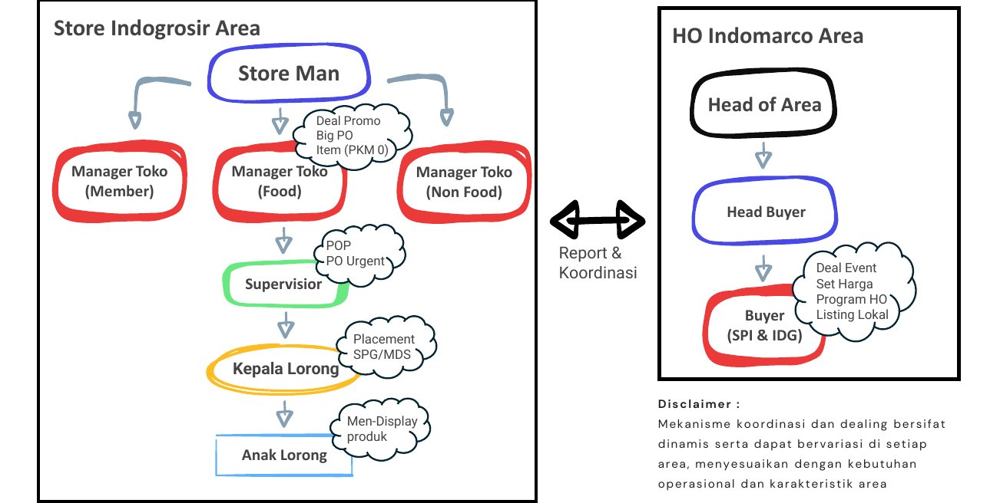
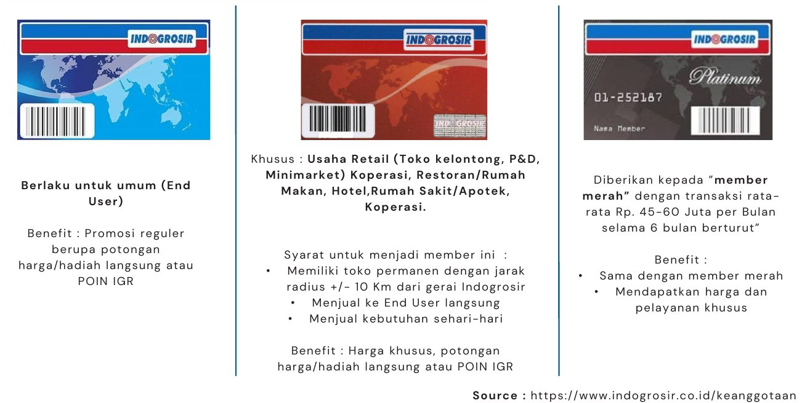
Web B2B igrconnect.com dipakai untuk operasional harian: menghitung stock level, estimasi PO, service level, dan insight market share.
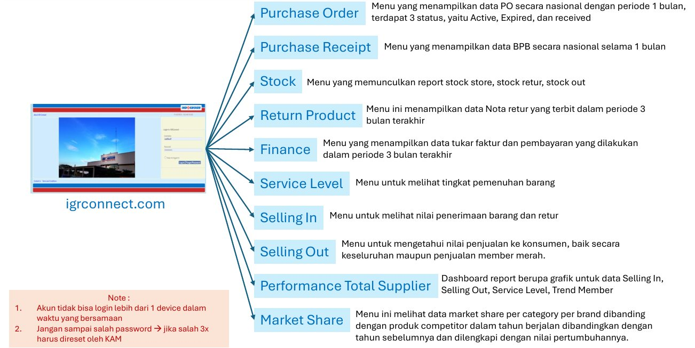
| Menu | Isi |
|---|---|
| Purchase Order | Data PO nasional periode 1 bulan, status Active, Expired, dan Received. |
| Purchase Receipt | Data BPB nasional selama 1 bulan. |
| Stock | Report stock store, stock retur, dan stock out. |
| Return Product | Nota retur yang terbit dalam 3 bulan terakhir. |
| Finance | Tukar faktur dan pembayaran dalam 3 bulan terakhir. |
| Service Level | Tingkat pemenuhan barang. |
| Selling In | Nilai penerimaan barang dan retur. |
| Selling Out | Nilai penjualan ke konsumen, keseluruhan maupun member merah. |
| Performance Total Supplier | Grafik Selling In, Selling Out, Service Level, dan trend member. |
| Market Share | Market share per kategori per brand dibanding kompetitor, tahun berjalan vs tahun sebelumnya, beserta pertumbuhannya. |
Gabungkan data Selling Out (rata-rata 3 bulan, AP3M) dengan stock on hand toko untuk mendapat stock level (%) per item, lalu hitung estimasi order ke buyer (berbasis data). Hasilnya biasanya dibagikan ke tim MDS untuk negosiasi PO dengan tim IGR.
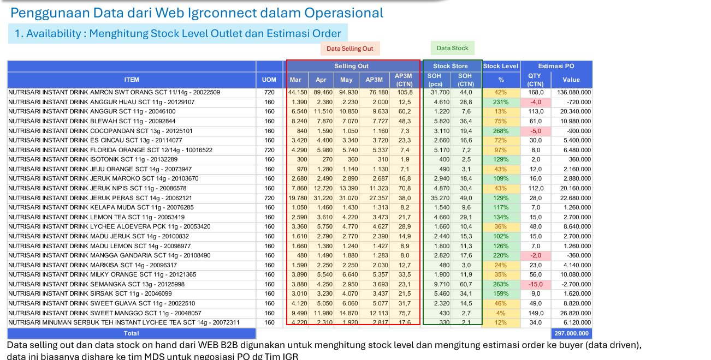
Dari data Service Level, cek item mana yang tidak terpenuhi. Lalu cek PO yang tidak terpenuhi di menu Purchasing Order. Jika stok sudah ready di provider/distributor, PIC bisa meminta PO pengganti ke SPV/Manager Indogrosir.
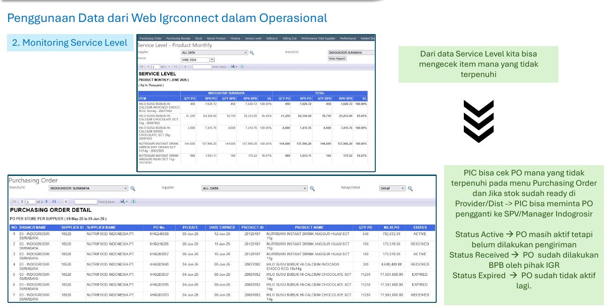
Dipakai untuk mengestimasi selling out kompetitor dan melihat apakah kategori secara keseluruhan tumbuh. Kalau kita sendiri tidak tumbuh, cek ulang kembali AAM PP.
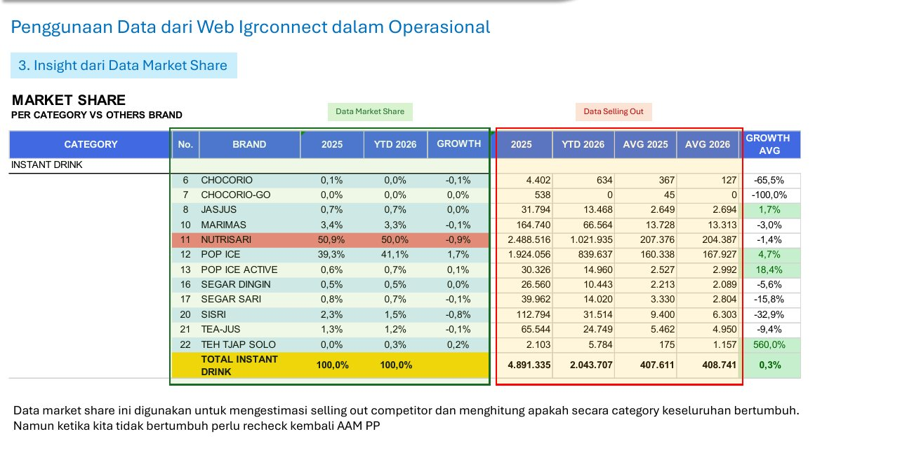
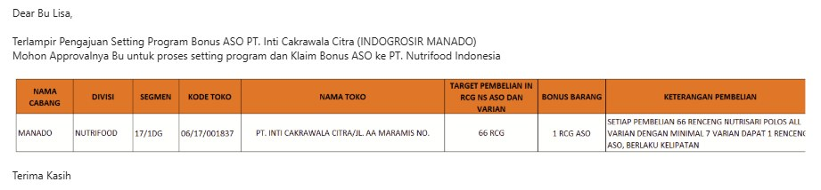
Program Sell In menyesuaikan SK Program GT, dan proses dealing bisa dilakukan mandiri di masing-masing cabang.
Inisiatif area adalah aktivitas yang dikembangkan sendiri oleh tim area, di luar program HO, untuk mengoptimalkan peluang bisnis sesuai karakteristik wilayah masing-masing.
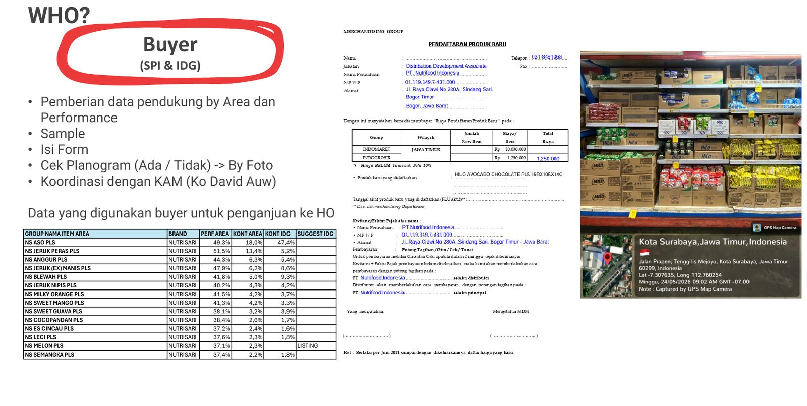
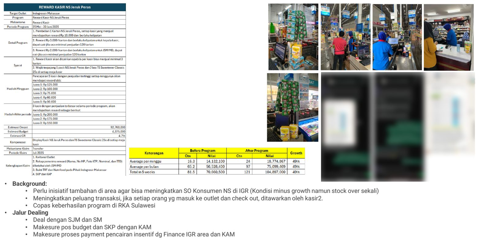
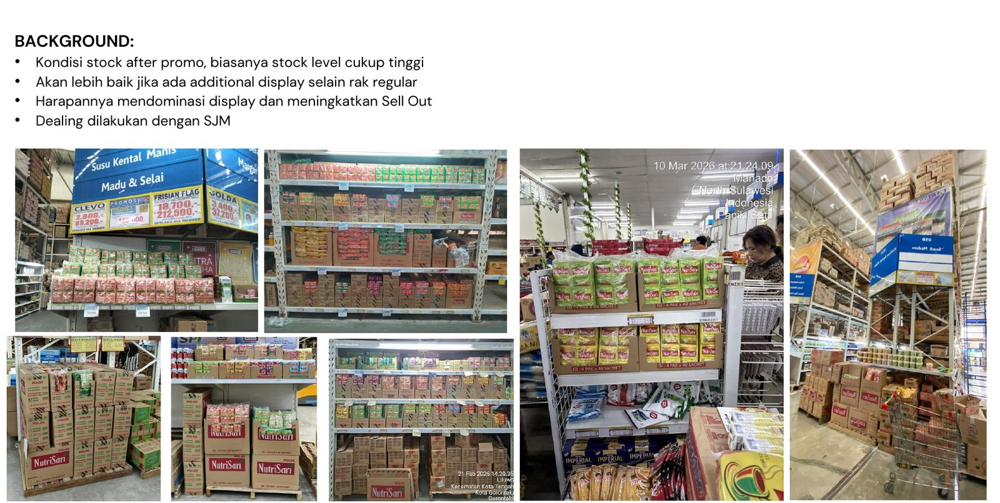
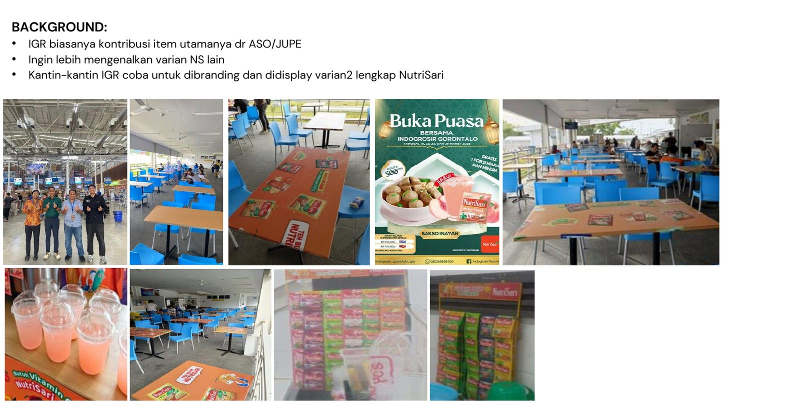
Panduan display NutriSari di outlet: rak dan hanger.
Estimasi investasi sekitar Rp1.000.000 per rak, untuk jangka 3 tahun. Harapannya rak dipakai dengan baik dan benar.
Omzet toko tidak harus besar, tapi toko perlu punya peluang untuk berkembang.
Sebelum dealing rak jemuran, cek dulu kondisi toko:
Kalau salesman yang melakukan dealing, kondisi toko wajib didetailkan.
Tiga aturan menyusun isi rak:
Rak perlu dirawat. Perbaikan stiker-stiker rak juga perlu diperhatikan.
Rak NFI adalah rak dari Nutrifood, Rak Toko adalah rak milik toko yang dipakai memajang NutriSari.
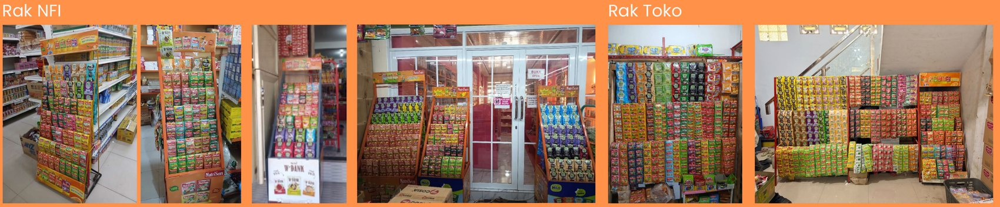
Contoh pajangan NutriSari dengan hanger. Hanger NFI adalah hanger dari Nutrifood, Hanger Toko adalah hanger milik toko.
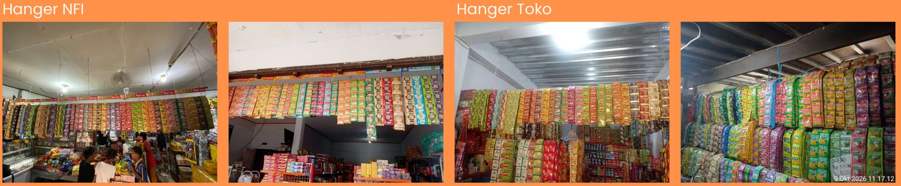